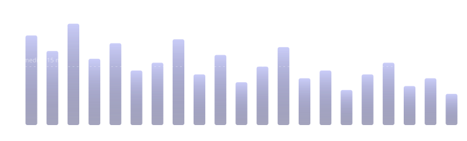

Seu pulso segue a vibração.
O BeatSleep lê seu coração no Apple Watch e então vibra no seu punho logo abaixo da sua própria frequência. Seu pulso segue a vibração para baixo, e você adormece.
Grátis, com assinatura opcional · Requer um Apple Watch com watchOS 10 ou posterior
Nem para começar, nem para conduzir, nem para te acordar. Uma noite é o motor de vibração e nada mais.
Ela existe só para provar que está funcionando, e some assim que você não precisa mais dela.
Sem login, sem servidor, sem análise, sem SDKs de terceiros. Não há nada para cadastrar.
Uma cadência que seu corpo consegue seguir para baixo.
Nos primeiros 45 segundos nada vibra: o BeatSleep mede a frequência em que você está realmente em repouso, porque a descida tem de começar onde você está.
Então a cadência se ancora nessa frequência e perde quatro batimentos a cada dez minutos, ficando logo abaixo do seu pulso, longe o bastante para conduzir e perto o bastante para ser seguida. Ela nunca é pedida acima do seu pulso: se você descer mais rápido do que o previsto, a cadência desce ao seu encontro em vez de puxar para o outro lado. O número na tela é sempre sua frequência cardíaca real, nunca o alvo, então o que você vê é você mesmo seguindo.
Se você se virar, se um barulho te acordar, se o pulso subir, ela para de puxar e se reancora no seu batimento real em menos de um minuto. A inquietação é seguida, não combatida.

- seu pulso
- a cadência
Quatro fases, e depois ela te deixa em paz.
- Escuta0–45 s
Nada vibra. O BeatSleep mede a frequência em que você está realmente em repouso, em vez de supor uma por você.
- Arrastoos quinze minutos seguintes
A cadência se ancora nessa frequência e desce, ficando logo abaixo do seu pulso e se reancorando sempre que você se mexe.
- Sustentaçãoquando você chega ao seu piso
O texto se dissolve e a tela escurece até uma única esfera lenta. Nada pede sua atenção de novo.
- Subidaa meia hora antes do seu horário
Se você pediu, a cadência se inverte e acelera ao longo da meia hora antes do horário que você marcou. Você acorda com uma aceleração, não com um alarme. No BeatSleep não existe alarme nenhum.
Ela acaba quando termina.
Cinco minutos depois de o seu pulso se assentar no alvo, a noite se fecha sozinha. A essa altura as vibrações não têm mais nada a fazer, e um relógio que registra até o amanhecer é bateria vazia na hora do almoço.
Ou um teto fixo
Quinze minutos, uma hora, o que servir. A sessão para ali, tendo você se assentado ou não.
Ou a noite inteira
Conduzida do começo ao fim, com uma aceleração da vibração ao longo da meia hora antes do seu horário em vez de um alarme.
Seu piso, não um palpite
Ele parte do seu próprio mínimo de sono no Saúde, depois se move um batimento por noite com base nas suas próprias noites, e nunca te leva abaixo dele.
O Apple Watch não dá a um app volume nenhum de vibração, só um punhado de padrões, e a maioria leva um som pelo alto-falante. O BeatSleep usa o único que não leva, então quem dorme do seu lado atravessa a sua noite dormindo.
O Saúde diz que você dormiu sete horas.
O BeatSleep diz que quarenta desses minutos você esteve acordado, em onze pedaços separados. Quanto tempo levou para adormecer. O quanto seu pulso caiu abaixo da sua frequência de repouso. O quanto o meio da sua noite se move de um dia para o outro.
Nada disso é dado novo: são os mesmos dados com a conta feita, lidos do Saúde no seu iPhone. É também por isso que há algo para olhar já na primeiríssima manhã, inclusive todas as noites anteriores à instalação.

Uma noite de exemplo, desenhada por esta página. Todos os números deste site são inventados, e nenhum é a medição de ninguém.
Uma noite, em uma única figura.
Todo app de sono desenha uma noite como um gráfico de barras deitado. Este dobra a noite em círculo: começa no topo, gira no sentido horário até a manhã, e cada raio avança para dentro até onde aquele minuto foi profundo. O fio fino que o atravessa é o seu pulso, mais perto do centro quando seu coração estava mais lento.
Uma noite que caiu limpa é uma flor funda e regular. Uma noite quebrada é um anel esfarrapado com o meio comido. Você aprende a ler a sua antes de aprender a ler os números, e é justamente esse o ponto.


Avaliado em relação às suas próprias noites. Nunca às de outra pessoa.
Um número que te compara a uma população é pior que número nenhum: diz a quem dorme pouco que está quebrado e a quem dorme mal que está tudo bem. Por isso a referência aqui é a sua própria mediana, e onde ainda não há histórico suficiente para ter uma, a tela diz quais partes ainda estão sendo aprendidas em vez de inventá-las em silêncio.
Atrás da noite passada está o histórico: cada noite que o BeatSleep conduziu, quanto cada uma levou para descer, e a sua mediana entre elas. E um calendário que alcança qualquer noite que o Saúde guarde, até a primeira que ele tem, e não só as duas semanas que a faixa consegue mostrar.
Atrás do histórico está o mês. No dia primeiro, o mês que acabou de terminar é calculado inteiro: o que havia para ler, o que o BeatSleep fez, como foram as noites, e onde o mês ficou em relação aos anteriores. Uma noite da qual o Saúde não guardou nada continua sendo um buraco em vez de ser preenchida com uma média, e cada noite dele é desenhada em um só relógio, de adormecer até levantar. O mês que acabou de passar é grátis; os anteriores são Pro.
Uma tela, e nenhum anel para fechar.
Quanto você levou para descer, em relação à sua própria mediana, não à de outra pessoa. O momento em que seu pulso e a cadência se encontraram. O quanto você foi levado para baixo.
A frase no topo é escrita no próprio telefone, pelo modelo do aparelho, no seu idioma em vez de traduzida do idioma de outra pessoa. Nada é enviado a lugar nenhum para escrevê-la, e ela não tem permissão para dizer o que a sua noite significou: um app de sono que interpreta está fazendo uma afirmação médica.
Nenhuma nota contra estranhos. Nenhuma sequência. Nenhum anel para fechar.
Sem abrir o app.
Widgets na tela de início
A Impressão noturna da noite passada, e quanto você levou para descer. A forma é a resposta, então o app só é aberto quando você quer um porquê.
Uma complicação no relógio
O plano desta noite no mostrador que você já está usando, até onde a descida chegou enquanto ela roda, e um botão da Central de Controle que começa a noite de qualquer lugar.
Uma atividade ao vivo
A descida na tela bloqueada e na Dynamic Island enquanto ela roda, legível à distância de um braço, no escuro, sem desbloquear nada.
Atalhos e Siri
Começar uma noite, conduzir uma respiração ou perguntar como foi a noite passada, a partir de um atalho ou de uma automação.
No iPad também
Não é uma coluna de telefone ampliada. A tela é distribuída em colunas que a preenchem, e acompanha o Stage Manager e o Split View conforme mudam.
Uma respiração para desacelerar
Conduzida pelo punho, por um som suave, ou por ambos, no telefone ou no relógio, e escrita no seu app Saúde como minutos de atenção plena.
Não existe servidor para onde mandar.
Sua frequência cardíaca é lida do HealthKit no relógio. O resumo é calculado ali, durante a noite, e viaja até o seu iPhone pelo link criptografado da Apple entre aparelhos. A única coisa escrita de volta são os minutos de atenção plena da sua descida, no seu app Saúde.
A sincronização iCloud opcional, desligada até você ligar, escreve no seu próprio banco de dados privado do iCloud, em campos criptografados. Desligá-la apaga esses registros em vez de apenas ignorá-los. Não há sistema de contas, nem análise, nem identificador de publicidade, nem SDK de terceiros em lugar nenhum do app.
Você pode exportar tudo como arquivo, ou apagar de vez, a qualquer momento.
Três noites inteiras por semana, de graça. Nada retido dentro de uma delas.
Noites inteiras, conduzidas exatamente como as do Pro.
- Três noites completas em quaisquer sete dias
- A descida, e a proteção que a encerra
- O piso adaptativo, aprendido das suas próprias noites
- Todos os padrões de respiração menos o seu
- A noite passada, e a última semana
- Qualquer noite que o Saúde tenha, duas semanas para trás
- O mês que acabou de passar, lido inteiro
- Seu sono lido do Saúde, e seu histórico como arquivo
- A onda Maré, a que quase todos os punhos preferem
Profundidade, para quem quiser.
- Todas as noites, em vez de três por semana
- Uma respiração com os seus quatro tempos
- Todas as noites que você já gravou, e qualquer noite que o Saúde tenha, por mais antiga que seja
- Todos os meses atrás de você, e todos os meses daqui em diante
- As ondas Zumbido e Sussurro
- Suas noites em todos os seus aparelhos, pelo seu próprio iCloud
- Mais seis cores de destaque, e três fundos onde pousá-las
Cobrado na sua Conta Apple, renovando até você cancelar, o que pode ser feito a qualquer momento nos Ajustes. Veja os termos de uso.
Antes de começar.
Preciso de um Apple Watch?
Sim, para a vibração: a cadência é produzida pelo relógio, e sem ele o app não tem com o que te conduzir. O lado do iPhone continua lendo seu sono do Saúde, então ele tem algo a mostrar de qualquer forma.
Vai acordar quem dorme do meu lado?
Não. O BeatSleep usa a única vibração do Apple Watch que não leva som pelo alto-falante, e uma noite não faz som nenhum em momento algum: nem para começar, nem para conduzir, nem para te acordar. A única coisa que dá para ouvir é um exercício de respiração, se você pedir, e esse é feito acordado.
Isso acaba com a bateria?
Não foi feito para rodar a noite inteira. Cinco minutos depois de o seu pulso se assentar no alvo, a sessão se fecha sozinha, o que costuma dar uns quinze minutos de relógio. O modo de noite inteira existe, e custa o que uma noite inteira custa.
Para onde vão meus dados?
Para lugar nenhum. Não há conta nem servidor. Eles ficam nos seus aparelhos, e se movem entre eles pelo link criptografado da Apple, ou pelo seu próprio iCloud privado se você ligar. A política de privacidade diz isso em detalhe.
É um dispositivo médico?
Não. Ele não diagnostica, trata, cura nem previne nenhuma condição, e nada do que ele te mostra é uma medição médica. Se você tem um distúrbio do sono ou uma condição cardíaca, fale com um médico e não com um app.
Hoje à noite, então.
Ponha o relógio, e deixe seu pulso seguir a vibração para baixo.
Grátis, com assinatura opcional · Requer um Apple Watch com watchOS 10 ou posterior
Não. Ele não diagnostica, trata, cura nem previne nenhuma condição, e nada do que ele te mostra é uma medição médica. O método que ele usa já foi estudado: um laço fechado que lê uma frequência cardíaca e vibra abaixo dela, em Choi et al., Sensors 19(19):4136, 2019. É um artigo que vale a leitura, não uma promessa sobre você. Se você tem um distúrbio do sono ou uma condição cardíaca, fale com um médico e não com um app.